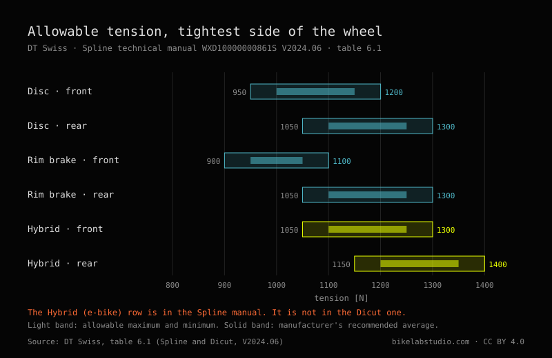
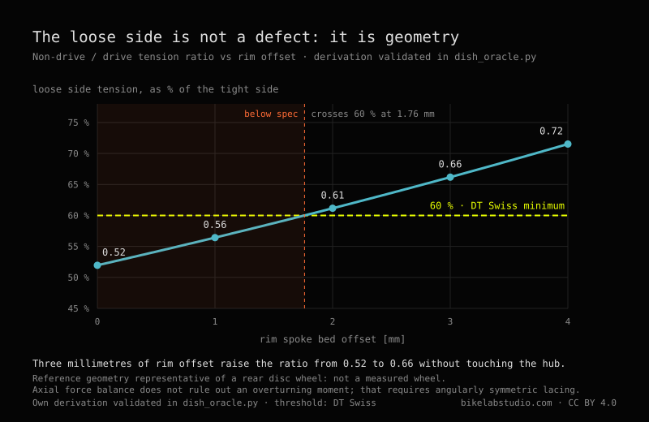
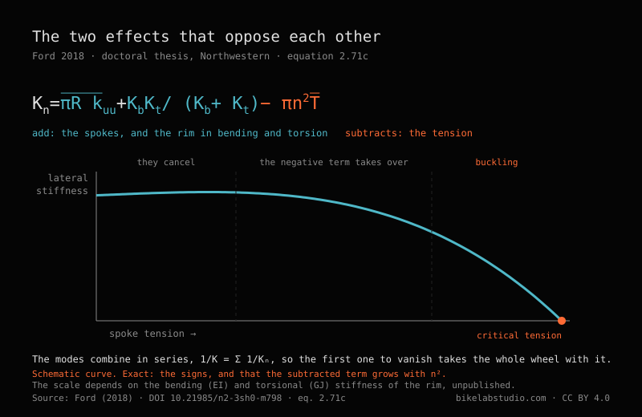

How much tension does a spoke carry

Keily Sánchez
On the other side of the wheel. Trujillo, January 2026. Available for editorial work.
@sanchez.keily · @kei.san02 · Photograph: Carlos Eduardo Ravello Joo
A spoke rings. You pluck it with a fingernail and it gives a note, and if you have trued a few wheels you end up tuning by ear without meaning to. Everybody knows that much. What almost nobody knows is how much tension should be in there.
Ask in ten workshops and you get ten answers. And eight of the ten will tell you, with the calm of someone repeating something they heard from a good source, that half a millimetre of lateral runout is what the ISO standard requires.
It doesn't. I went and looked, and this is what is there.
For an ordinary disc wheel, DT Swiss publishes a window of 950 to 1200 N at the front and 1050 to 1300 N at the rear —roughly 97 to 122 kgf and 107 to 133 kgf— and those values are for the tightest side, not for the whole wheel. The other side sits below that by geometry, around 52 % on a rear disc wheel, and tightening it does not fix anything: it pulls the wheel out of dish. The half millimetre of runout everybody quotes does not come from the ISO standard; it comes from a Park Tool guide where it is written as a general guideline. DT Swiss specifies 0.3 mm for its own wheels.
MODULE_01 // THE WHEEL DOESN'T HANG
Before the numbers you need to know what holds what, because almost everyone has it backwards, and it isn't their fault: the wheel is deceiving.
A spoke is a wire. It pulls, and it never pushes: compress it and it buckles and stops doing anything at all. So when you see thirty-two spokes holding up someone who weighs eighty kilos, what you are looking at is not the top ones hanging the bike. It is a rim that arrived from the factory squeezed by thirty-two wires all pulling towards the hub at once. The rim lives in compression: it is a ring with too much diameter that cannot stretch.
You get on and the wheel flattens slightly where it touches the ground. The spokes in that zone lose tension. The ones on top gain almost nothing. The weight does not travel down through the upper spokes: it is transmitted because down below the pulling stops.
If the resting tension is high enough, the spokes at the bottom slacken a little on each revolution and come back, and the cycle they see is small. If it is too low they reach zero, hang loose for an instant and load up again with a snap. A spoke does not break from pulling hard: it breaks from letting go and pulling again, revolution after revolution, for years.

MODULE_02 // HOW MUCH TENSION, IN NUMBERS
DT Swiss publishes it, and publishes it well: in newtons, split by brake type and by use, in table 6.1 of its technical manuals —the Spline one, document WXD10000000861S, version 2024.06, and the Dicut one, WXD10000000860S, of the same date.
The header carries a precision that is almost never quoted: the values are for the tightest side of the wheel. Not for the whole wheel.
| Wheel | Minimum | Maximum | In kgf |
|---|---|---|---|
| Disc, front | 950 N | 1200 N | 97 – 122 |
| Disc, rear | 1050 N | 1300 N | 107 – 133 |
| Rim brake, front | 900 N | 1100 N | 92 – 112 |
| Rim brake, rear | 1050 N | 1300 N | 107 – 133 |
| E-bike, front | 1050 N | 1300 N | 107 – 133 |
| E-bike, rear | 1150 N | 1400 N | 117 – 143 |
The kilogram-force column is our own conversion, at 1 kgf = 9.80665 N, because nearly every workshop tension meter reads in kgf. The official values are the newtons.

That last row is the only manufacturer figure we have found that puts a number on what an e-bike motor demands from a wheel: a hundred newtons more headroom than the equivalent rear disc wheel. It is in the Spline manual and not in the Dicut one, which is the road range and carries no e-bike wheels.
And now, why you have never seen that table. In the PDF those numbers do not read 1200. They read 1 200, with a thin typographic space in the middle. Search for "1200" inside that document and you get nothing. Not one hit. To read the table we had to download the PDF and decompress its internal streams byte by byte, because not even the viewer's own search sees them. A free, published, verifiable manufacturer figure — and structurally invisible to any machine that goes looking for it.
MODULE_03 // THE HALF MILLIMETRE
ISO 4210-7:2023 is the part of the standard that covers wheels and rims. Ten pages, second edition, January 2023. We read it in full.
It contains not a single value in millimetres. None. It has forces in newtons, durations in minutes, and two figures with a dial gauge in place explaining how rotational accuracy is measured. How it is measured, not how much is allowed.
It does say where the figure lives: in clause 4.4 it requires lateral runout to be checked in accordance with ISO 4210-2:2023, clause 4.10.1. That part 2 costs money and we have not read it. So the number exists, it has a known address, and almost nobody has been to that address — ourselves included. We would rather say that than pretend the standard says nothing.
"Half a millimetre of lateral runout is what the ISO standard requires."
From Park Tool, wheel truing guide of 31 March 2021, and stated with complete honesty: «As a general guideline, try for 0.5 millimeters or less of lateral deviation.» A general guideline. On the same page they give 1 mm for radial runout —twice the margin— for a workshop reason that deserves to be repeated as often as the number: the wheel is going to carry a tyre, and tyres are not manufactured to that precision.
Meanwhile, in table 6.2 of those same manuals, DT Swiss specifies 0.3 mm of lateral runout for its own wheels in carbon and welded aluminium, and 0.4 in aluminium with a sleeve. The same value for rim brake as for disc, which surprises anyone who assumes discs are more forgiving.
Park Tool 0.5. DT Swiss 0.3. Nearly double, between two authorities nobody disputes. They are not flatly contradicting each other: Park Tool writes a guide for any wheel that comes into a workshop, DT Swiss writes a product specification for its own. But whoever quotes 0.5 as universal is working looser than that wheel's manufacturer allows, and whoever quotes it as normative is quoting something they have not opened.

MODULE_04 // THE LOOSE SIDE
Every rear wheel with a cassette has a loose side. The drive-side flange sits closer to the centre to make room for the sprockets, so its spokes leave at a shallower angle and have to pull harder for the rim to end up centred. The other side sits below. Always.
The workshop question is how far below, and nobody publishes that figure: we looked in hub makers, rim makers and technical literature. It is not there. But it does not need publishing, because it follows from statics: the rim can only be centred if the sideways pulls of both sides cancel out. What comes out of that depends on three things only —how many spokes per side, how far the flanges sit from the wheel plane, and how long the spokes are.
On an ordinary rear disc wheel the non-drive side lands around 52 % of the drive side. If the tight side runs at 1200 N, the loose one is working between 600 and 900 N depending on the hub. That is the real range half the spokes in your rear wheel live in, and it is half of what the table says.
Three consequences that are useful on Monday morning.
First. That ratio does not depend on how you build the wheel, nor on the spoke gauge, nor on how hard you tension. So "the left side is loose" is not a fault you fix by tightening it: tighten it and you pull the wheel out of dish. Park Tool already said it in prose —«the opposing side will simply have lower tension when the centering, or dish, is correct»—; what was missing was the number.
Second. It circulates widely, mostly in English, that the drive side runs "1.82 times" tighter. That number is not a constant of nature: it is the result of one particular hub. It changes with the geometry of every wheel. On our reference configuration it comes out at 1.93. Quoting it as universal is quoting somebody else's wheel.
And third, the one we liked most. An offset rim —drilled off centre— moves that geometry without touching the hub. Three millimetres of offset raise the ratio from 0.52 to 0.66. And here something appears that we have not seen written down anywhere: DT Swiss asks that the loose side not drop below 60 % of the tight one, and that same reference wheel with a symmetric rim sits at 52 %. It doesn't make it. It crosses 60 % at 1.8 mm of offset. The offset rim is not a marketing refinement: it is what makes the manufacturer's own rule reachable.

The full derivation, with its limit cases and its numerical validation, is published as open code in the BikeLab repository. It is not an experimental result: it is geometry, and anyone can redo it or break it.
MODULE_05 // WHERE SPOKES BREAK
Henri Gavin instrumented three rear wheels with strain gauges, went out riding with them, then took spokes to the laboratory and broke them in fatigue. Seventy-six of them. He published the split:
The elbow is that ninety-degree bend the spoke makes to enter the hub, cold-formed during manufacture, with hardened metal and residual stresses from birth. Gavin calls it, in his own words, «this fatigue critical detail». The other eight broke at the threads, where the roots of the thread concentrate stress.
Workshop note: if a spoke breaks on you, the first thing to do is look at where it broke. It is telling you what happened.
And here we owe something from earlier. "A spoke is a wire", flatly, is not true at the top end: a good spoke is thinner in the middle than at the ends. A 2.0/1.8/2.0 has two millimetres at the tips and 1.8 along the long section. It looks like a weakness and does the opposite: the thin section stretches more for the same load, and by stretching more it absorbs part of the cycle that would otherwise arrive whole at the ends. The middle is thinned precisely to unload the elbow and the threads, which is where the seventy-six break.
MODULE_06 // MORE TENSION IS NOT STIFFER
Among riders it circulates that more tension makes the wheel stiffer. It feels intuitive: tensioning sounds like hardening, and a tight spoke rings higher, just like a string. Among wheelbuilders the opposite circulates: that tension does not affect stiffness as long as no spoke goes fully slack under load.
Matthew Ford measured, simulated and calculated, and wrote this on page four of his Northwestern thesis:
«Contrary to both popular belief and expert consensus, increasing spoke tension reduces the lateral stiffness of the wheel, which I demonstrate through theoretical calculations, finite-element simulations, and experiments.»
Raising tension reduces lateral stiffness. In clause 2.6.2 he lists both beliefs, the rider's and the professional's, and dispatches them together: «Both of these views are incorrect.»
The mechanism, in plain terms: tension comes in through two doors that push in opposite directions. Through one, a tight spoke resists being moved sideways — the guitar-string effect everyone intuits. Through the other, those thirty-two spokes pulling towards the centre are compressing the rim, and a compressed rim is a ring that wants to buckle. Think of a plastic ruler you push from both ends: it holds, it holds, and suddenly it snaps out to one side. The rim is in that situation the whole time.

At low tension the two effects nearly cancel, which is why measuring in that range shows nothing: the wheel looks indifferent. Higher up, the negative term takes over and lateral stiffness falls. Keep going and you reach a critical tension where the wheel buckles and does not come back.
Careful with the easy reading. This does not say you should tension low. High tension is still the only thing keeping a spoke from reaching zero under load, which is what actually breaks them. What it says is that tension is not a stiffness lever: whoever tightens a bit more "so it feels firmer" is paying something and buying nothing.
MODULE_07 // THE STANDARD DOES TELL DISCIPLINES APART
Back to the standard for a moment, because there is something it does distinguish and the workshop never mentions.
ISO 4210 knows four types of bicycle: city and trekking, young adult, mountain and racing. We searched the whole document for "downhill" and "BMX": zero hits. They are not in there.
For each of those four it sets a force on the rim in the static strength test. Three of them, 250 N. The mountain one, 370. Forty-eight per cent more.
And three details of the method are worth more than the number. The force is applied perpendicular to the plane of the wheel: it is not the rider's weight, which would be radial, it is a sideways shove. The test measures permanent deformation —the rim position is noted, the load is held for a minute, released, left to settle for another minute and measured again— so what is checked is not how far it bends but whether it stays bent. And on a rear wheel the force is applied from the cassette side, pushing towards the side that carries less tension. Whoever wrote that standard knew exactly where a wheel gives.
Look at where that leaves us. Ford says what tension reduces is lateral stiffness. Gavin says the lacing pattern matters most under lateral load, and that is where fatigue life is won or lost. And the only number in the standard that changes with discipline is lateral. Three sources, three methods, forty years between the first and the last, all pointing at the same axis. Meanwhile the workshop conversation is almost entirely about weight, which is radial.
MODULE_08 // WHAT TO DO WITH THIS ON MONDAY
None of the above is worth anything if it doesn't change what you do at the truing stand. This is what changes:
- Ask the rim maker for the number, not the internet. The window belongs to whoever made the rim, not the spoke or the hub, and it varies. If they don't publish it, that absence is itself a fact about the product.
- Measure the tight side and bring it into the window; leave the loose one where geometry puts it. If the loose side comes out at 50-55 % of the tight one on a rear disc wheel, the wheel is right, not wrong.
- Uniformity before magnitude. Between two wheels, one at 1000 N with all spokes even and another at 1200 N with wide scatter, the one that lasts is the first. Spokes break from the cycle, not from the level.
- When one breaks, look at where. Elbow: fatigue from insufficient tension or large cycles. Threads: check the nipple and its seat. In the middle: that is not fatigue, that is an impact.
- Don't add "a bit more so it feels firm". You are not buying stiffness. You are moving closer to rim buckling.
- And with the tyre deflated. The generic 100 to 120 kgf ranges that circulate are given with the tyre at zero pressure, a condition almost everyone drops when repeating them.
MODULE_09 // THE THREE PILES
Everything here, sorted. Not by topic: by what kind of claim each one is, which is what decides how much weight it can carry.
| MEASURED — THERE IS A TEST OR A SPECIFICATION BEHIND IT | |
| 950–1200 N front disc, 1050–1300 rear, 1150–1400 rear e-bike, tightest side | DT Swiss, table 6.1 |
| Lateral runout 0.3 mm in carbon and welded aluminium; 0.4 with a sleeve | DT Swiss, table 6.2 |
| 370 N on the rim for mountain, 250 for the other three types, from the cassette side | ISO 4210-7:2023 |
| 68 of 76 spokes break at the cold-worked elbow; 8 at the threads; none in the middle | Gavin, 1996 |
| Raising tension reduces lateral stiffness; there is a buckling tension | Ford, 2018 |
| Maximum static wheel load is 60 % of maximum system weight | DT Swiss, ASTM manual |
| DERIVED — NOBODY MEASURES IT, BUT IT FOLLOWS FROM STATICS | |
| The ratio between sides is pure geometry: it does not depend on how you build or how hard you tension | Rim equilibrium |
| The non-drive side lands at 52 % of the drive side on an ordinary rear disc wheel | The above |
| 3 mm of rim offset raise that ratio from 0.52 to 0.66 without touching the hub | The above |
| JUDGEMENT — SOMEBODY WITH A GOOD EYE SET IT, WITH NO PUBLISHED TEST | |
| 0.5 mm lateral and 1 mm radial runout as a workshop guideline | Park Tool, 2021 |
| ±20 % scatter from the mean as acceptable relative tension | Park Tool, 2021 |
| 100–120 kgf as a generic rim range, with the tyre deflated | Park Tool, 2021 |
| NO BACKING WE COULD FIND | |
| The rider weight → spoke count table | Seven scientific databases |
| The accuracy of a tension meter, as a ±% | Park Tool and DT Swiss |
| What tension and scatter factory wheels arrive with | Zero results |
They are good judgements, Park Tool's. We use them. But a judgement is not a measurement, and calling it by its name does not take value away from it: it gives it its own.
And one more that fits in no pile: the normative runout threshold exists, has an exact address —ISO 4210-2:2023, clause 4.10.1— and we have not read it. Neither have, in all likelihood, most of the people who quote it.
MODULE_10 // STRAIGHT ANSWERS
Each answer stands on its own and carries its source inside, so it can be quoted without dragging the rest of the text along. It is the short form of everything above.
How much tension should a bicycle spoke have?
DT Swiss publishes the window in table 6.1 of its technical manuals (Spline WXD10000000861S and Dicut WXD10000000860S, V2024.06), and the values are for the tightest side of the wheel, not the whole wheel: 950 to 1200 N on a front disc wheel, 1050 to 1300 N on a rear disc wheel, 900 to 1100 N on a front rim-brake wheel and 1150 to 1400 N on a rear e-bike wheel, which is the highest ceiling the manufacturer publishes. In kilograms-force, dividing by 9.80665: 97–122, 107–133, 92–112 and 117–143 kgf.
Does the ISO standard require 0.5 mm of lateral runout?
No. ISO 4210-7:2023, the part of the standard covering wheels and rims, contains no value in millimetres at all: only forces, times and measurement methods. In clause 4.4 it refers lateral runout control to ISO 4210-2:2023, clause 4.10.1, which is a paid standard. The 0.5 mm repeated in workshops comes from Park Tool's wheel truing guide of 31 March 2021, where it is written as a general guideline. DT Swiss specifies 0.3 mm for its own wheels in carbon and welded aluminium (table 6.2).
Why is the non-drive side of a rear wheel looser, and can you fix it by tightening?
It is looser because the drive-side flange sits closer to the wheel centre to make room for the cassette: its spokes leave at a shallower angle and must pull harder for the rim to be centred. The ratio between sides is geometry —spokes per side, flange spacing and spoke lengths— and does not depend on how the wheel is built or how hard it is tensioned, so tightening the loose side does not correct it: it pulls the wheel out of dish. On an ordinary rear disc wheel the non-drive side sits around 52 % of the drive side; an offset rim of 3 mm raises that ratio to 0.66 without touching the hub. Open derivation by BikeLab Studio, 2026.
Where do bicycle spokes break?
At the elbow. Henri Gavin fatigue-tested 76 spokes to failure in the laboratory and published the split in the Journal of Engineering Mechanics (ASCE) in 1996: 68 broke at the cold-worked elbow, 8 at the threads and none along the central section. That is why high-end spokes are thinned in the middle: the thin section stretches more and absorbs part of the cycle that would otherwise arrive whole at the elbow and the threads.
Does more spoke tension make the wheel stiffer?
No. Matthew Ford demonstrated the opposite in his doctoral thesis at Northwestern University (2018, DOI 10.21985/n2-3sh0-m798) through calculation, finite elements and experiment: increasing spoke tension reduces the lateral stiffness of the wheel, because the spokes compress the rim and a compressed rim tends to buckle; there is a critical tension at which lateral stiffness vanishes. High tension is still necessary for a different reason: keeping any spoke from reaching zero under load, which is what breaks them in fatigue.
Does the standard ask the same of a mountain bike and a road bike?
Not in lateral load. ISO 4210-7:2023 sets 370 N on the rim for the mountain bicycle and 250 N for the other three types it recognises —city and trekking, young adult and racing. The force is applied perpendicular to the plane of the wheel and, on a rear wheel, from the cassette side, which is the side with less tension. The test measures permanent deformation, not deflection. Downhill and BMX do not appear in the document.
How many spokes do I need for my weight?
That table does not exist. We searched seven scientific databases and the manufacturers' own documentation and found no published test relating rider weight to spoke count. The industry bounds the wheel along a different axis: DT Swiss publishes a maximum system weight per model —rider plus bike plus luggage— and a split rule stating that the maximum permissible static wheel load is 60 % of that system weight.
Ravello Joo, C. E. (2026). How much tension does a spoke carry. BikeLab Studio, Trujillo, Peru. ORCID 0009-0007-5631-7436. https://www.bikelabstudio.com/articles/cuanta-tension-radios-bicicleta-en.html
This is the plain-language version. The technical study carries the full reading of the standard, Ford's equations, Gavin's fatigue curve with its extrapolated range, the derivation of the ratio between sides and the code that validates it. It is in Spanish for now.
READ_THE_FULL_STUDY_(ES)_➔Sources
Every figure was read in its source document. Manufacturer PDFs were downloaded and their internal streams decompressed to extract the text; the papers were read in full. No figure comes from an abstract or a search-engine snippet. Where we could not open a source, we say so. Nothing is reproduced from the ISO text beyond its scope statement, which ISO publishes freely in its catalogue; clauses are cited by number.